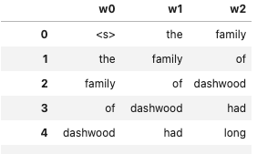
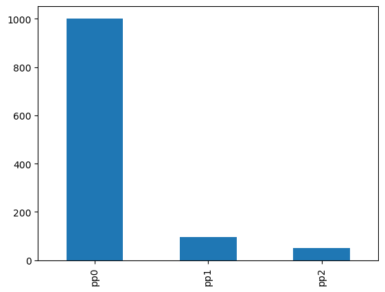
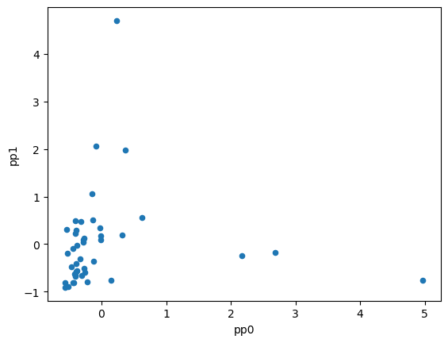
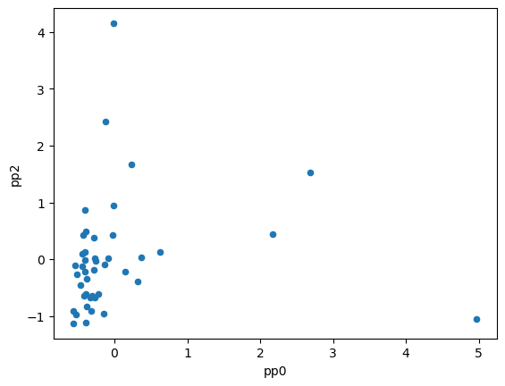

import pandas as pd
import numpy as npHow to Create an N-Gram Model from ScratchHow to Create an N-Gram Model from Scratch
Course: DS 5001
Module: M03 Language Models
Topic: How to Create an N-Gram Model from ScratchHow to Create an N-Gram Model from Scratch
Author: R.C. Alvarado
Date: 6 February 2023Purpose: To demonstrate how a simple ngram language models are created from data and applied to the prediction of sentences. No effort is made to define classes or functions; instead the code is meant to show the logic as clearly as possible.
Set Up Environment
Configure
import configparserconfig = configparser.ConfigParser()
config.read("../env.ini")
data_dir = config['DEFAULT']['data_home']
output_dir = config['DEFAULT']['output_dir']Get Some Training Data
data_dir = output_dir
OHCO = ['book_id','chap_num','para_num','sent_num','token_num']TOKEN = pd.read_csv(data_dir + "/austen-combo-TOKENS.csv").set_index(OHCO)
VOCAB = pd.read_csv(data_dir + "/austen-combo-VOCAB.csv").set_index('term_str')TOKEN.head()| token_str | term_str | |||||
|---|---|---|---|---|---|---|
| book_id | chap_num | para_num | sent_num | token_num | ||
| 1 | 1 | 1 | 0 | 0 | The | the |
| 1 | family | family | ||||
| 2 | of | of | ||||
| 3 | Dashwood | dashwood | ||||
| 4 | had | had |
VOCAB.head()| n | n_chars | p | i | h | |
|---|---|---|---|---|---|
| term_str | |||||
| 1 | 3 | 1 | 0.000015 | 16.058901 | 0.000235 |
| 15 | 1 | 2 | 0.000005 | 17.643863 | 0.000086 |
| 16 | 1 | 2 | 0.000005 | 17.643863 | 0.000086 |
| 1760 | 1 | 4 | 0.000005 | 17.643863 | 0.000086 |
| 1784 | 1 | 4 | 0.000005 | 17.643863 | 0.000086 |
Select OOV terms
For our OOV terms, we select very short words that appear only once.
VOCAB['modified_term_str'] = VOCAB.index
VOCAB.loc[(VOCAB.n == 1) & (VOCAB.n_chars < 3), 'modified_term_str'] = "<UNK>"VOCAB| n | n_chars | p | i | h | modified_term_str | |
|---|---|---|---|---|---|---|
| term_str | ||||||
| 1 | 3 | 1 | 0.000015 | 16.058901 | 0.000235 | 1 |
| 15 | 1 | 2 | 0.000005 | 17.643863 | 0.000086 | <UNK> |
| 16 | 1 | 2 | 0.000005 | 17.643863 | 0.000086 | <UNK> |
| 1760 | 1 | 4 | 0.000005 | 17.643863 | 0.000086 | 1760 |
| 1784 | 1 | 4 | 0.000005 | 17.643863 | 0.000086 | 1784 |
| ... | ... | ... | ... | ... | ... | ... |
| youthful | 3 | 8 | 0.000015 | 16.058901 | 0.000235 | youthful |
| z | 1 | 1 | 0.000005 | 17.643863 | 0.000086 | <UNK> |
| zeal | 7 | 4 | 0.000034 | 14.836508 | 0.000507 | zeal |
| zealous | 4 | 7 | 0.000020 | 15.643863 | 0.000306 | zealous |
| zealously | 2 | 9 | 0.000010 | 16.643863 | 0.000163 | zealously |
8238 rows × 6 columns
We apply the modified term list to our tokens.
TOKEN['modified_term_str'] = TOKEN.term_str.map(VOCAB.modified_term_str)TOKEN[TOKEN.modified_term_str == '<UNK>'].sample(5)| token_str | term_str | modified_term_str | |||||
|---|---|---|---|---|---|---|---|
| book_id | chap_num | para_num | sent_num | token_num | |||
| 2 | 22 | 41 | 2 | 1 | n | n | <UNK> |
| 1 | 38 | 28 | 7 | 3 | em | em | <UNK> |
| 2 | 1 | 2 | 2 | 3 | 9 | 9 | <UNK> |
| 21 | 71 | 4 | 13 | Wm | wm | <UNK> | |
| 1 | 40 | 17 | 1 | 1 | ho | ho | <UNK> |
Generate NGram Models
Here, we want to take our list of modified tokens and add a sentence boundary symbol <s> before the first token of each sentence.
Then we want to bind offset versions of the this token list into a dataframe with as many columns as our ngram is wide.
So, for example, for a trigram table representing the novle Emma, we want something like this:

Note how each succussive column is the same data but shifted up one row.
Note also that this table contains all the data required to count instances of trigrams and all lower-order n-grams, i.e. bigram and unigram.
Prepare tokens for ngram binding
First, we filter all tokens that start sentences.
Our OHCO index helps us here: any token with token_num == 0 is at the start of a sentence, since the renumbering starts with each sentence.
S = TOKEN.query("token_num == 0")[['modified_term_str']].indexWe assign an absolute sentence number to each inital token and then label all the tokens in a given sentence by their sentence number.
We must do this because the current sent_num index column refers to the order of the sentence within the paragraph.
We want the order of the sentence within the corpus.
TOKEN.loc[S, 'sent_num2'] = [n+1 for n in range(len(S))] # Assign ordinals TOKEN.sent_num2 = TOKEN.sent_num2.ffill().astype('int') # Label all members of sentence with ordinalThen we prepend each sentence with the <s> sign.
TOKEN2 = TOKEN.groupby('sent_num2').modified_term_str\
.apply(lambda x: pd.Series(['<s>'] + list(x))).reset_index(drop=True)Inspect the results:
' '.join(TOKEN2.head(20).to_list()) + ' ...''<s> the family of dashwood had long been settled in sussex <s> their estate was large and their residence was ...'Bind modified token sequence into an ngram table
Next, we choose the maximum ngram length for our models.
ngram = 3Now we concatenate a set of offset versions of our token list.
For this we use the pd.concat() method to bind our token lists, and
we use the df.shift() method to offset our token list for each position in the resulting ngram list.
NGRAMS = pd.concat([TOKEN2.shift(0-i) for i in range(ngram)], axis=1)
NGRAMS.index.name = 'ngram_num'We create our word index names following the convention w0, w1, ..., wN.
widx = [f"w{i}" for i in range(ngram)]
NGRAMS.columns = widxNGRAMS| w0 | w1 | w2 | |
|---|---|---|---|
| ngram_num | |||
| 0 | <s> | the | family |
| 1 | the | family | of |
| 2 | family | of | dashwood |
| 3 | of | dashwood | had |
| 4 | dashwood | had | long |
| ... | ... | ... | ... |
| 217675 | of | persuasion | by |
| 217676 | persuasion | by | jane |
| 217677 | by | jane | austen |
| 217678 | jane | austen | None |
| 217679 | austen | None | None |
217680 rows × 3 columns
Generate models
Next we create a list of models.
Since the model index will be zero-based (given Python), the trigram model will be M[2], for example.
We can use the maximum ngram table to derive all of the lower order models.
For each model, we will compute the relevant probabilities and information for each ngram.
M = [None for i in range(ngram)]
for i in range(ngram):
if i == 0:
M[i] = NGRAMS.value_counts('w0').to_frame('n')
M[i]['p'] = M[i].n / M[i].n.sum()
M[i]['i'] = np.log2(1/M[i].p)
else:
M[i] = NGRAMS.value_counts(widx[:i+1]).to_frame('n')
M[i]['cp'] = M[i].n / M[i-1].n
M[i]['ci'] = np.log2(1/M[i].cp)M[2]| n | cp | ci | |||
|---|---|---|---|---|---|
| w0 | w1 | w2 | |||
| mrs | <s> | jennings | 234 | 0.442344 | 1.176759 |
| <s> | it | was | 177 | 0.407834 | 1.293946 |
| i | am | 142 | 0.142714 | 2.808806 | |
| have | 132 | 0.132663 | 2.914159 | ||
| mrs | <s> | dashwood | 121 | 0.228733 | 2.128261 |
| ... | ... | ... | ... | ... | ... |
| happy | anne | could | 1 | 1.000000 | 0.000000 |
| ardour | of | 1 | 1.000000 | 0.000000 | |
| as | all | 1 | 0.333333 | 1.584963 | |
| to | 1 | 0.333333 | 1.584963 | ||
| zealously | discharging | all | 1 | 1.000000 | 0.000000 |
167055 rows × 3 columns
Test Models
Generate Training Data
Import and pad the test sentences.
TEST_SENTS = pd.read_csv("test_sentences.txt", header=None, names=['sent_str'])
TEST_SENTS.sent_str = '<s> ' + TEST_SENTS.sent_str
TEST_SENTS.index.name = 'sent_num'TEST_SENTS.head()| sent_str | |
|---|---|
| sent_num | |
| 0 | <s> the quick brown fox jumped over the lazy dogs |
| 1 | <s> The event had every promise of happiness f... |
| 2 | <s> Mr Weston was a man of unexceptionable cha... |
| 3 | <s> ChatGPT is not the singularity |
| 4 | <s> but it was a black morning's work for her |
Tokenize and normalize.
TEST_TOKENS = TEST_SENTS.sent_str.apply(lambda x: pd.Series(x.split())).stack().to_frame('token_str')
TEST_TOKENS['term_str'] = TEST_TOKENS.token_str.str.replace(r"[\W_]+", "", regex=True).str.lower()
TEST_TOKENS.index.names = ['sent_num', 'token_num']
TEST_TOKENS.loc[TEST_TOKENS.token_str == '<s>', 'term_str'] = '<s>' # These will have filtered out in the normalizationTEST_TOKENS.head()| token_str | term_str | ||
|---|---|---|---|
| sent_num | token_num | ||
| 0 | 0 | <s> | <s> |
| 1 | the | the | |
| 2 | quick | quick | |
| 3 | brown | brown | |
| 4 | fox | fox |
Identify OOV terms
Create a Series of OOV terms from our unigram model.
We prefer this to our VOCAB table since the former includes the <s> symbol.
V = M[0].sort_index().reset_index().w0V.sample(10)3878 inforced
6886 spurned
4014 intimation
6839 speech
7653 unfathomable
6951 steward
4898 obedient
2051 directions
4213 lamentations
4053 involved
Name: w0, dtype: objectTEST_TOKENS.loc[~TEST_TOKENS.term_str.isin(V), 'term_str'] = "<UNK>"TEST_TOKENS[TEST_TOKENS.term_str == '<UNK>'].value_counts('token_str')token_str
Weston 2
ChatGPT 1
Hartfield 1
Isabella 1
Isabella's 1
Woodhouse 1
childhood 1
illnesses 1
intellectual 1
lazy 1
tenderer 1
valetudinarian 1
Name: count, dtype: int64Convert test tokens into ngrams
Use offset and bind method using pd.concat() and df.shift(0), as above.
TEST = pd.concat([TEST_TOKENS.shift(0-i)[['term_str']] for i in range(ngram)], axis=1).fillna('<s>')
TEST.columns = widx
TEST = TEST.reset_index()TEST.tail()| sent_num | token_num | w0 | w1 | w2 | |
|---|---|---|---|---|---|
| 474 | 42 | 10 | give | her | pleasant |
| 475 | 42 | 11 | her | pleasant | society |
| 476 | 42 | 12 | pleasant | society | again |
| 477 | 42 | 13 | society | again | <s> |
| 478 | 42 | 14 | again | <s> | <s> |
Bind the models to test data
We add our model data to the test data as a set of features.
Note: if you re-run this cell, you will grow the table unnecessarily.
Be sure to regenerate the TEST dataframe first.
TEST = TEST.merge(M[0].i, on=['w0'], how='left').rename(columns={'i':'i0'})
TEST = TEST.merge(M[1].ci, on=['w0','w1'], how='left').rename(columns={'ci':'i1'})
TEST = TEST.merge(M[2].ci, on=['w0','w1','w2'], how='left').rename(columns={'ci':'i2'})TEST| sent_num | token_num | w0 | w1 | w2 | i0 | i1 | i2 | |
|---|---|---|---|---|---|---|---|---|
| 0 | 0 | 0 | <s> | the | quick | 4.079116 | 4.692731 | NaN |
| 1 | 0 | 1 | the | quick | brown | 4.871732 | 12.860117 | NaN |
| 2 | 0 | 2 | quick | brown | fox | 13.483922 | NaN | NaN |
| 3 | 0 | 3 | brown | fox | jumped | 15.731849 | NaN | NaN |
| 4 | 0 | 4 | fox | jumped | over | 17.731849 | NaN | NaN |
| ... | ... | ... | ... | ... | ... | ... | ... | ... |
| 474 | 42 | 10 | give | her | pleasant | 10.052369 | 2.979040 | NaN |
| 475 | 42 | 11 | her | pleasant | society | 5.860329 | NaN | NaN |
| 476 | 42 | 12 | pleasant | society | again | 12.924494 | NaN | NaN |
| 477 | 42 | 13 | society | again | <s> | 12.522396 | NaN | NaN |
| 478 | 42 | 14 | again | <s> | <s> | 9.607728 | 1.876194 | NaN |
479 rows × 8 columns
Apply fallback
Note that some values are null values, i.e. NaN – these are cases of ngram combinations that do not appear in the training data.
We we replace null values using “stupid fallback.” This means that if is bigram does not exist, we replace it with the unigram value of the last term, and if a trigram does not exist, we replace it with the bigram value of the last two terms.
This is not the best method of interpolation but it has the virtue of being very easy to implement.
We could write a general routine that iterates through i for range(ngram), but we just implement the two cases for trigrams here.
TEST.loc[TEST.i1.isna(), 'i1'] = TEST.w1.map(M[0].i)TEST = TEST.merge(M[1].ci, left_on=['w1','w2'], right_on=['w0','w1'])
TEST.loc[TEST.i2.isna(), 'i2'] = TEST.ci
TEST = TEST.drop('ci', axis=1)TEST.sort_values('i0')| sent_num | token_num | w0 | w1 | w2 | i0 | i1 | i2 | |
|---|---|---|---|---|---|---|---|---|
| 0 | 0 | 0 | <s> | the | quick | 4.079116 | 4.692731 | 12.860117 |
| 120 | 12 | 0 | <s> | the | equal | 4.079116 | 4.692731 | 12.860117 |
| 247 | 29 | 0 | <s> | he | could | 4.079116 | 4.546824 | 5.520946 |
| 112 | 11 | 0 | <s> | but | the | 4.079116 | 3.859943 | 4.207828 |
| 310 | 39 | 0 | <s> | being | settled | 4.079116 | 13.652733 | 7.588715 |
| ... | ... | ... | ... | ... | ... | ... | ... | ... |
| 31 | 3 | 5 | singularity | <s> | but | 17.731849 | 4.079116 | 3.859943 |
| 102 | 9 | 3 | nursed | her | through | 17.731849 | 0.000000 | 10.871520 |
| 111 | 10 | 7 | owing | here | <s> | 17.731849 | 10.777653 | 2.494765 |
| 207 | 22 | 2 | emma | was | aware | 17.731849 | 6.088895 | 11.642954 |
| 97 | 30 | 9 | ages | <s> | and | 17.731849 | 4.079116 | 3.270109 |
339 rows × 8 columns
Compute sentence scores
for n in range(ngram):
TEST_SENTS[f'pp{n}'] = np.exp2(TEST.groupby('sent_num')[f'i{n}'].mean())TEST_SENTS.sort_values('pp0')| sent_str | pp0 | pp1 | pp2 | |
|---|---|---|---|---|
| sent_num | ||||
| 28 | <s> but he was no companion for her | 145.356229 | 26.750155 | 18.182994 |
| 4 | <s> but it was a black morning's work for her | 148.603536 | 18.804269 | 10.627530 |
| 20 | <s> How was she to bear the change | 174.540021 | 121.726344 | 46.473587 |
| 15 | <s> knowing all the ways of the family | 203.954617 | 78.585142 | 15.826059 |
| 24 | <s> and a Miss Taylor in the house | 216.450798 | 19.743031 | 40.828353 |
| 19 | <s> and who had such an affection for her as c... | 295.444852 | 55.404579 | 34.041964 |
| 25 | <s> and with all her advantages natural and do... | 327.763999 | 27.775623 | 53.561150 |
| 18 | <s> one to whom she could speak every thought ... | 333.072366 | 87.039292 | 45.592088 |
| 14 | <s> She had been a friend and companion such a... | 344.039462 | 27.441482 | 64.903447 |
| 21 | <s> It was true that her friend was going only... | 358.001018 | 43.181856 | 27.713239 |
| 29 | <s> He could not meet her in conversation rati... | 378.801093 | 38.265239 | 49.525454 |
| 33 | <s> for having been a valetudinarian all his l... | 383.667904 | 40.771211 | 80.694590 |
| 40 | <s> and many a long October and November eveni... | 389.406420 | 136.349662 | 54.718426 |
| 42 | <s> and their little children to fill the hous... | 391.223616 | 113.877552 | 42.397179 |
| 1 | <s> The event had every promise of happiness f... | 393.759284 | 60.528665 | 67.116953 |
| 23 | <s> only half a mile from them | 394.854646 | 46.774250 | 10.894267 |
| 13 | <s> on their being left to each other was yet ... | 411.111651 | 119.071898 | 28.912701 |
| 11 | <s> but the intercourse of the last seven years | 418.390104 | 48.586749 | 20.959050 |
| 35 | <s> he was a much older man in ways than in ye... | 427.202624 | 93.165547 | 38.228065 |
| 37 | <s> his talents could not have recommended him... | 501.170933 | 69.430468 | 26.787393 |
| 26 | <s> she was now in great danger of suffering f... | 512.020374 | 135.538631 | 18.431313 |
| 5 | <s> The want of Miss Taylor would be felt ever... | 535.364012 | 39.960976 | 27.494460 |
| 32 | <s> was much increased by his constitution and... | 569.744472 | 102.931097 | 63.524772 |
| 41 | <s> before Christmas brought the next visit fr... | 572.355290 | 99.000372 | 43.546936 |
| 8 | <s> how she had devoted all her powers to atta... | 589.100181 | 105.508183 | 50.872073 |
| 36 | <s> and though everywhere beloved for the frie... | 594.848425 | 52.417260 | 26.515802 |
| 7 | <s> how she had taught and how she had played ... | 604.938770 | 45.573731 | 49.321784 |
| 27 | <s> She dearly loved her father | 663.003856 | 28.601827 | 28.635560 |
| 16 | <s> interested in all its concerns | 776.264971 | 185.023233 | 16.641210 |
| 9 | <s> and how nursed her through the various ill... | 804.234190 | 137.937208 | 47.038614 |
| 31 | <s> and Mr Woodhouse had not married early | 808.640927 | 64.835521 | 135.226451 |
| 6 | <s> She recalled her past kindness the kindnes... | 872.746711 | 268.506479 | 50.863875 |
| 22 | <s> but Emma was aware that great must be the ... | 961.017774 | 124.048832 | 65.118492 |
| 17 | <s> and peculiarly interested in herself in ev... | 982.605937 | 109.948370 | 83.233794 |
| 12 | <s> the equal footing and perfect unreserve wh... | 990.162956 | 103.359760 | 195.536922 |
| 30 | <s> The evil of the actual disparity in their ... | 1223.095280 | 31.453849 | 42.645729 |
| 38 | <s> Her sister though comparatively but little... | 1357.426160 | 490.423261 | 108.557770 |
| 34 | <s> without activity of mind or body | 1483.243374 | 110.746912 | 36.256001 |
| 39 | <s> being settled in London only sixteen miles... | 1572.934773 | 262.014959 | 51.376731 |
| 2 | <s> Mr Weston was a man of unexceptionable cha... | 1949.212515 | 141.911737 | 54.870981 |
| 10 | <s> A large debt of gratitude was owing here | 4329.897084 | 74.565473 | 65.622680 |
| 0 | <s> the quick brown fox jumped over the lazy dogs | 5110.625578 | 80.265694 | 103.403175 |
| 3 | <s> ChatGPT is not the singularity | 8600.816138 | 31.931954 | 13.392336 |
TEST_SENTS.sort_values('pp1')| sent_str | pp0 | pp1 | pp2 | |
|---|---|---|---|---|
| sent_num | ||||
| 4 | <s> but it was a black morning's work for her | 148.603536 | 18.804269 | 10.627530 |
| 24 | <s> and a Miss Taylor in the house | 216.450798 | 19.743031 | 40.828353 |
| 28 | <s> but he was no companion for her | 145.356229 | 26.750155 | 18.182994 |
| 14 | <s> She had been a friend and companion such a... | 344.039462 | 27.441482 | 64.903447 |
| 25 | <s> and with all her advantages natural and do... | 327.763999 | 27.775623 | 53.561150 |
| 27 | <s> She dearly loved her father | 663.003856 | 28.601827 | 28.635560 |
| 30 | <s> The evil of the actual disparity in their ... | 1223.095280 | 31.453849 | 42.645729 |
| 3 | <s> ChatGPT is not the singularity | 8600.816138 | 31.931954 | 13.392336 |
| 29 | <s> He could not meet her in conversation rati... | 378.801093 | 38.265239 | 49.525454 |
| 5 | <s> The want of Miss Taylor would be felt ever... | 535.364012 | 39.960976 | 27.494460 |
| 33 | <s> for having been a valetudinarian all his l... | 383.667904 | 40.771211 | 80.694590 |
| 21 | <s> It was true that her friend was going only... | 358.001018 | 43.181856 | 27.713239 |
| 7 | <s> how she had taught and how she had played ... | 604.938770 | 45.573731 | 49.321784 |
| 23 | <s> only half a mile from them | 394.854646 | 46.774250 | 10.894267 |
| 11 | <s> but the intercourse of the last seven years | 418.390104 | 48.586749 | 20.959050 |
| 36 | <s> and though everywhere beloved for the frie... | 594.848425 | 52.417260 | 26.515802 |
| 19 | <s> and who had such an affection for her as c... | 295.444852 | 55.404579 | 34.041964 |
| 1 | <s> The event had every promise of happiness f... | 393.759284 | 60.528665 | 67.116953 |
| 31 | <s> and Mr Woodhouse had not married early | 808.640927 | 64.835521 | 135.226451 |
| 37 | <s> his talents could not have recommended him... | 501.170933 | 69.430468 | 26.787393 |
| 10 | <s> A large debt of gratitude was owing here | 4329.897084 | 74.565473 | 65.622680 |
| 15 | <s> knowing all the ways of the family | 203.954617 | 78.585142 | 15.826059 |
| 0 | <s> the quick brown fox jumped over the lazy dogs | 5110.625578 | 80.265694 | 103.403175 |
| 18 | <s> one to whom she could speak every thought ... | 333.072366 | 87.039292 | 45.592088 |
| 35 | <s> he was a much older man in ways than in ye... | 427.202624 | 93.165547 | 38.228065 |
| 41 | <s> before Christmas brought the next visit fr... | 572.355290 | 99.000372 | 43.546936 |
| 32 | <s> was much increased by his constitution and... | 569.744472 | 102.931097 | 63.524772 |
| 12 | <s> the equal footing and perfect unreserve wh... | 990.162956 | 103.359760 | 195.536922 |
| 8 | <s> how she had devoted all her powers to atta... | 589.100181 | 105.508183 | 50.872073 |
| 17 | <s> and peculiarly interested in herself in ev... | 982.605937 | 109.948370 | 83.233794 |
| 34 | <s> without activity of mind or body | 1483.243374 | 110.746912 | 36.256001 |
| 42 | <s> and their little children to fill the hous... | 391.223616 | 113.877552 | 42.397179 |
| 13 | <s> on their being left to each other was yet ... | 411.111651 | 119.071898 | 28.912701 |
| 20 | <s> How was she to bear the change | 174.540021 | 121.726344 | 46.473587 |
| 22 | <s> but Emma was aware that great must be the ... | 961.017774 | 124.048832 | 65.118492 |
| 26 | <s> she was now in great danger of suffering f... | 512.020374 | 135.538631 | 18.431313 |
| 40 | <s> and many a long October and November eveni... | 389.406420 | 136.349662 | 54.718426 |
| 9 | <s> and how nursed her through the various ill... | 804.234190 | 137.937208 | 47.038614 |
| 2 | <s> Mr Weston was a man of unexceptionable cha... | 1949.212515 | 141.911737 | 54.870981 |
| 16 | <s> interested in all its concerns | 776.264971 | 185.023233 | 16.641210 |
| 39 | <s> being settled in London only sixteen miles... | 1572.934773 | 262.014959 | 51.376731 |
| 6 | <s> She recalled her past kindness the kindnes... | 872.746711 | 268.506479 | 50.863875 |
| 38 | <s> Her sister though comparatively but little... | 1357.426160 | 490.423261 | 108.557770 |
TEST_SENTS.sort_values('pp2')| sent_str | pp0 | pp1 | pp2 | |
|---|---|---|---|---|
| sent_num | ||||
| 4 | <s> but it was a black morning's work for her | 148.603536 | 18.804269 | 10.627530 |
| 23 | <s> only half a mile from them | 394.854646 | 46.774250 | 10.894267 |
| 3 | <s> ChatGPT is not the singularity | 8600.816138 | 31.931954 | 13.392336 |
| 15 | <s> knowing all the ways of the family | 203.954617 | 78.585142 | 15.826059 |
| 16 | <s> interested in all its concerns | 776.264971 | 185.023233 | 16.641210 |
| 28 | <s> but he was no companion for her | 145.356229 | 26.750155 | 18.182994 |
| 26 | <s> she was now in great danger of suffering f... | 512.020374 | 135.538631 | 18.431313 |
| 11 | <s> but the intercourse of the last seven years | 418.390104 | 48.586749 | 20.959050 |
| 36 | <s> and though everywhere beloved for the frie... | 594.848425 | 52.417260 | 26.515802 |
| 37 | <s> his talents could not have recommended him... | 501.170933 | 69.430468 | 26.787393 |
| 5 | <s> The want of Miss Taylor would be felt ever... | 535.364012 | 39.960976 | 27.494460 |
| 21 | <s> It was true that her friend was going only... | 358.001018 | 43.181856 | 27.713239 |
| 27 | <s> She dearly loved her father | 663.003856 | 28.601827 | 28.635560 |
| 13 | <s> on their being left to each other was yet ... | 411.111651 | 119.071898 | 28.912701 |
| 19 | <s> and who had such an affection for her as c... | 295.444852 | 55.404579 | 34.041964 |
| 34 | <s> without activity of mind or body | 1483.243374 | 110.746912 | 36.256001 |
| 35 | <s> he was a much older man in ways than in ye... | 427.202624 | 93.165547 | 38.228065 |
| 24 | <s> and a Miss Taylor in the house | 216.450798 | 19.743031 | 40.828353 |
| 42 | <s> and their little children to fill the hous... | 391.223616 | 113.877552 | 42.397179 |
| 30 | <s> The evil of the actual disparity in their ... | 1223.095280 | 31.453849 | 42.645729 |
| 41 | <s> before Christmas brought the next visit fr... | 572.355290 | 99.000372 | 43.546936 |
| 18 | <s> one to whom she could speak every thought ... | 333.072366 | 87.039292 | 45.592088 |
| 20 | <s> How was she to bear the change | 174.540021 | 121.726344 | 46.473587 |
| 9 | <s> and how nursed her through the various ill... | 804.234190 | 137.937208 | 47.038614 |
| 7 | <s> how she had taught and how she had played ... | 604.938770 | 45.573731 | 49.321784 |
| 29 | <s> He could not meet her in conversation rati... | 378.801093 | 38.265239 | 49.525454 |
| 6 | <s> She recalled her past kindness the kindnes... | 872.746711 | 268.506479 | 50.863875 |
| 8 | <s> how she had devoted all her powers to atta... | 589.100181 | 105.508183 | 50.872073 |
| 39 | <s> being settled in London only sixteen miles... | 1572.934773 | 262.014959 | 51.376731 |
| 25 | <s> and with all her advantages natural and do... | 327.763999 | 27.775623 | 53.561150 |
| 40 | <s> and many a long October and November eveni... | 389.406420 | 136.349662 | 54.718426 |
| 2 | <s> Mr Weston was a man of unexceptionable cha... | 1949.212515 | 141.911737 | 54.870981 |
| 32 | <s> was much increased by his constitution and... | 569.744472 | 102.931097 | 63.524772 |
| 14 | <s> She had been a friend and companion such a... | 344.039462 | 27.441482 | 64.903447 |
| 22 | <s> but Emma was aware that great must be the ... | 961.017774 | 124.048832 | 65.118492 |
| 10 | <s> A large debt of gratitude was owing here | 4329.897084 | 74.565473 | 65.622680 |
| 1 | <s> The event had every promise of happiness f... | 393.759284 | 60.528665 | 67.116953 |
| 33 | <s> for having been a valetudinarian all his l... | 383.667904 | 40.771211 | 80.694590 |
| 17 | <s> and peculiarly interested in herself in ev... | 982.605937 | 109.948370 | 83.233794 |
| 0 | <s> the quick brown fox jumped over the lazy dogs | 5110.625578 | 80.265694 | 103.403175 |
| 38 | <s> Her sister though comparatively but little... | 1357.426160 | 490.423261 | 108.557770 |
| 31 | <s> and Mr Woodhouse had not married early | 808.640927 | 64.835521 | 135.226451 |
| 12 | <s> the equal footing and perfect unreserve wh... | 990.162956 | 103.359760 | 195.536922 |
TEST_SENTS.mean(numeric_only=True).plot.bar();
Visualize
Z = TEST_SENTS.copy()
Z['sent_str'] = Z.sent_str.str.replace('<s> ', '')
Z = Z.set_index('sent_str')
Z = (Z - Z.mean()) / Z.std()# Z.style.background_gradient(cmap='YlGnBu', axis=None)Z['pp_mean'] = Z.mean(axis=1)Z.sort_values('pp_mean', ascending=False).plot.barh(figsize=(5,15));
Z.plot.scatter('pp0', 'pp1');
Z.plot.scatter('pp1', 'pp2');
Z.plot.scatter('pp0', 'pp2');